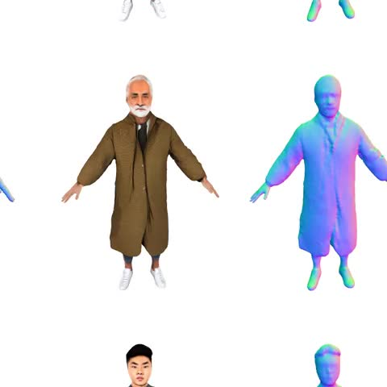
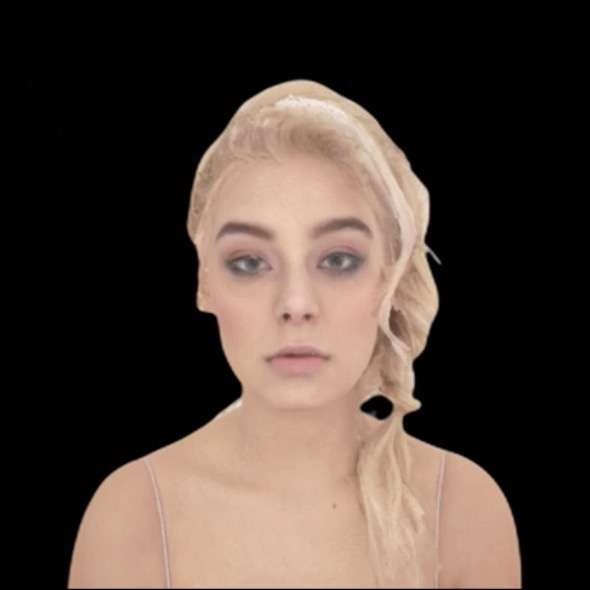
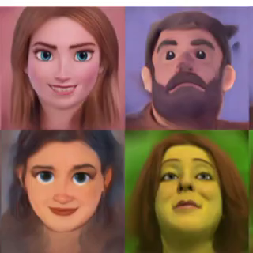
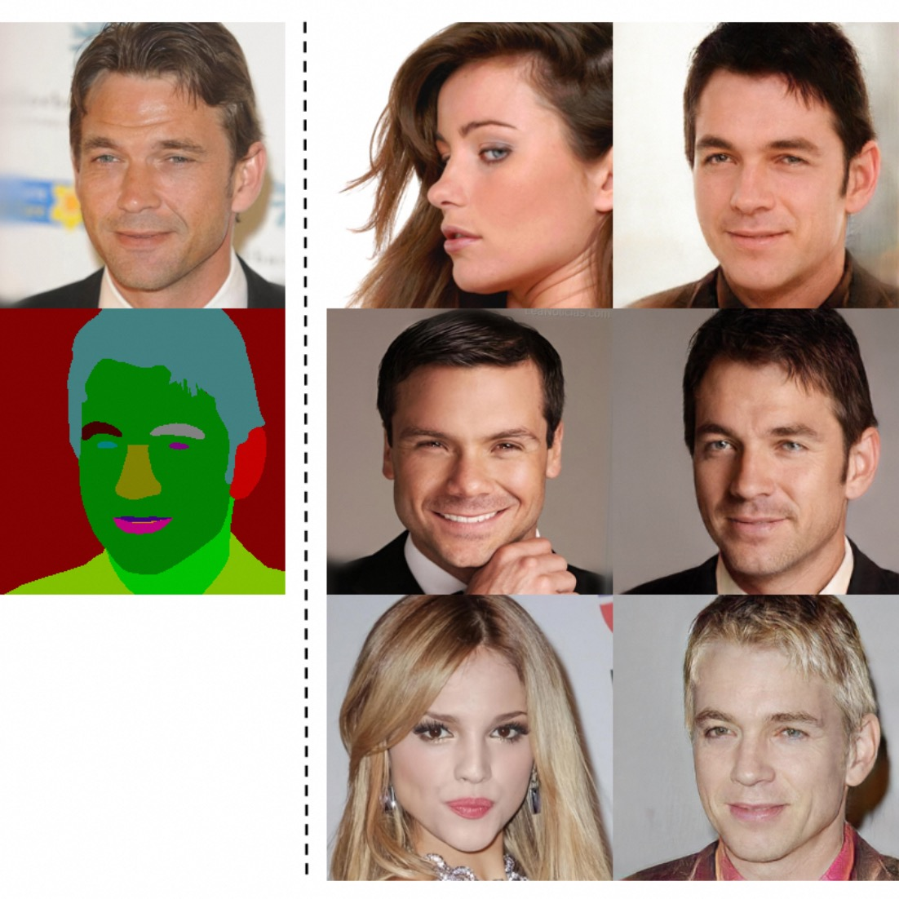
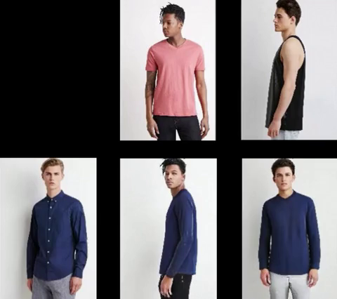
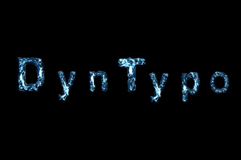
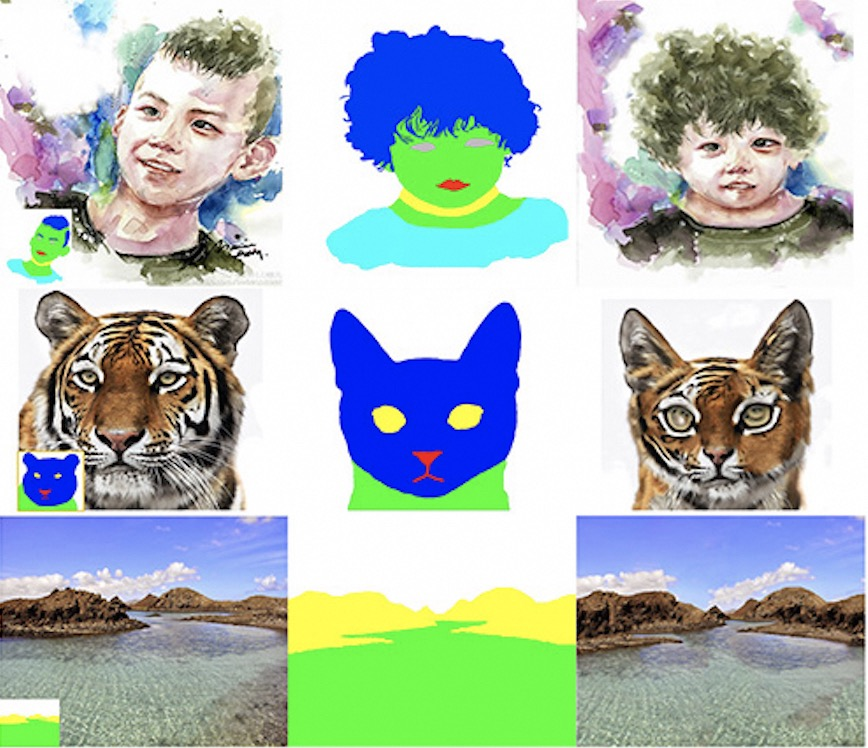

|
Yifang Men I am an AI Researcher at Alibaba TongYi Lab. I graduated with M.S. degree in Computer Science from Peking University in 2020 and B.S. degree from Wuhan University in 2017. My research focuses on computer vision and deep learning, particularly on generative AI models for 2D and 3D contents. We are now recruiting for Summer Internships, and positions for Research Interns (RI) are continuously open for applications. Welcome to contact me with your CV and research statement! |
{kind=link}
Publications (* denotes equal contribution) |
|

|
En3D: An Enhanced Generative Model for Sculpting 3D Humans from 2D Synthetic Data
Yifang Men, Biwen Lei, Yuan Yao, Miaomiao Cui, Zhouhui Lian, Xuansong Xie CVPR, 2024 project page / paper / video / code A 3D generative model trained on millions of synthetic 2D images, which doesn't rely on any pre-existing 3D or 2D assets, but capable of producing visually realistic 3D humans with diverse contents. |
|

|
3DToonify: Creating Your High-Fidelity 3D Stylized Avatar Easily from 2D Portrait Images
Yifang Men*, Hanxi Liu*, Yuan Yao, Miaomiao Cui, Xuansong Xie, Zhouhui Lian CVPR, 2024 project page / video / arXiv Given a set of RGB portrait images captured by a monocular camera, our method can learn a photorealistic representation in neural implicit fields, and transfer it to artistic ones with underlying 3D structures changed. |
|

|
Your3dEmoji: Creating Personalized Emojis via One-shot 3D-aware Cartoon Avatar Synthesis
Shiyao Xu, Lingzhi Li, Li Shen, Yifang Men, Zhouhui Lian SIGGRAPH Asia, 2022 (Technical Communication) project page / paper / code A 3D generative model to translate a real-world face image into its corresponding 3D avatar with only a single style example provided. The model is 3D-aware in sense and also able to do attribute editing, such as smile, age, etc directly in the 3D domain. |

|
DCT-Net: Domain-Calibrated Translation for Portrait Stylization
Yifang Men, Yuan Yao, Miaomiao Cui, Zhouhui Lian, Xuansong Xie, SIGGRAPH, 2022 (Journal Track, TOG) project page / paper / video / code DCT-Net is a novel image translation architecture for few-shot portrait stylization. It enables advanced ability to high-preserving contents, strong generality to complicated real-world scenes, and high scalability to full-body translation with only head observations. |
|

|
ADGAN++: Controllable Image Synthesis with Attribute-Decomposed GAN
Guo Pu*, Yifang Men*, Yiming Mao, Yuning Jiang, Wei-Ying Ma, Zhouhui Lian TPAMI, 2022 project page / paper / code A generative model to produce realistic images with desired controllable attributes provided in various source inputs. |
|
|
Unpaired Cartoon Image Synthesis via Gated Cycle Mapping
Yifang Men, Yuan Yao, Miaomiao Cui, Zhouhui Lian, Xuansong Xie, Xian-Sheng Hua CVPR, 2022 project page / paper / video A common cartoon translator which can not only simultaneously render exaggerated anime faces and realistic cartoon scenes, but also provide flexible user controls for desired cartoon styles. |
|

|
ADGAN: Controllable Person Image Synthesis with Attribute-Decomposed GAN
Yifang Men, Yiming Mao, Yuning Jiang, Wei-Ying Ma, Zhouhui Lian CVPR, 2020 (Oral Presentation, Top 5.7%) project page / arXiv / video / code ADGAN is a novel generative model for controllable person image synthesis, which can produce realistic person images with desired human attributes (e.g., pose, head, upper clothes and pants) provided in various source inputs. |
|

|
DynTypo: Example-based Dynamic Text Effects Transfer
Yifang Men, Zhouhui Lian, Yingmin Tang, Jianguo Xiao CVPR, 2019 project page / paper / video DynTypo is a novel approach for dynamic text effects transfer by using example-based texture synthesis. High-quality results with temporal smoothing and sophisticated dynamic effects can be obtained. |
|

|
A Common Framework for Interactive Texture Transfer
Yifang Men, Zhouhui Lian, Yingmin Tang, Jianguo Xiao CVPR, 2018 (Spotlight, Top 7%) project page / paper / code A general-purpose solution to interactive texture transfer problems including turning doodles into artworks, editing decorative patterns, generating texts in special effect as well as controlling effect distribution in text images, and swapping textures. |
Academic Services |
 |
Conference & Journal Reviewer: CVPR, ICCV, ECCV, TPAMI, SIGGRAPH, SIGGRAPH Asia, etc. |
Awards |
|
Excellent Dissertation Award, PKU, 2020
Schlumberger Scholarship, PKU, 2019 Huawei Scholarship, PKU, 2018 Outstanding Graduates, WHU, 2017 Meritorious Winner in MCM/ICM, Feb, 2016 Second Prize of Asia and Pacific Mathematical Contest in Modeling, 2015 First Prize in the IBM Cup Web Page Design Competition, 2014 National Scholarship, 2014 |
Experiences |
|
Researcher at DAMO Academy, Alibaba Group
Jul. 2020 - Present
Research intern at ByteDance AI Lab Jue. 2019 - Nov. 2019 Master Degree, Peking University, Beijing, China Sep. 2017 - Jul. 2020 Bachelor’s Degree, Wuhan University, Wuhan, China Sep. 2013 - Jun. 2017 |
Contact Me |
| Email: yifangmen AT pku.edu.cn |
|
This page template is borrowed from ✩. |